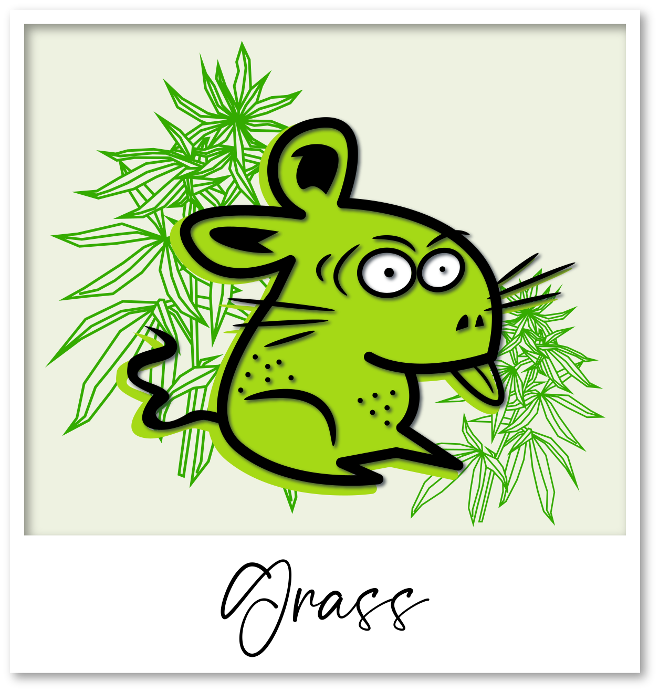
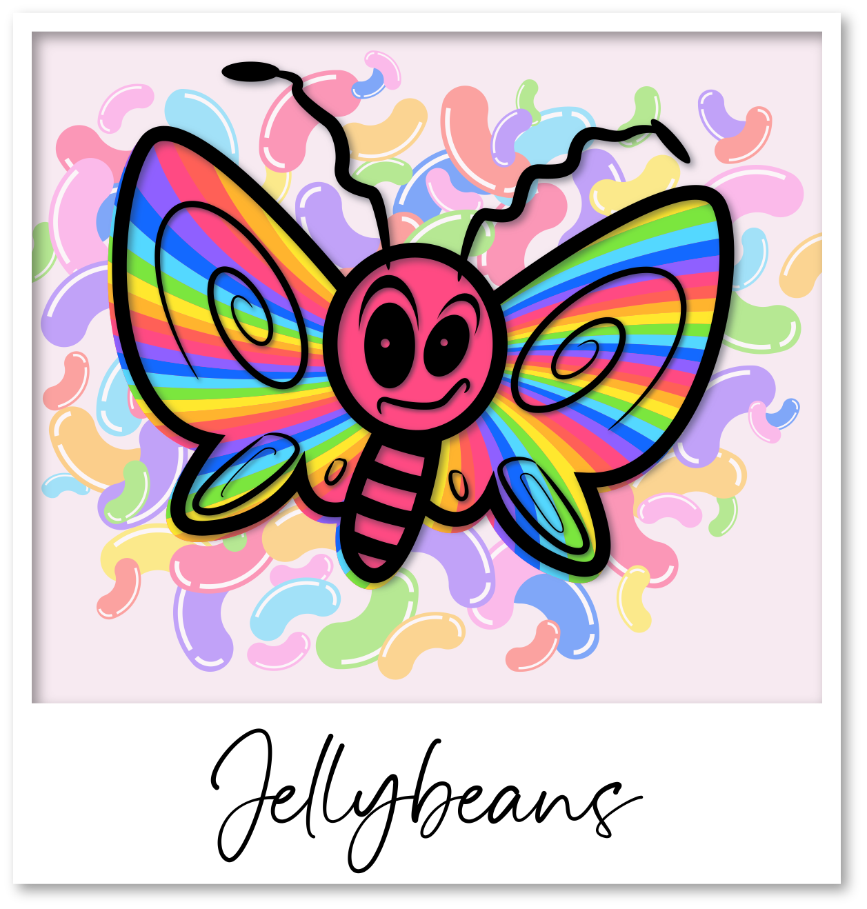
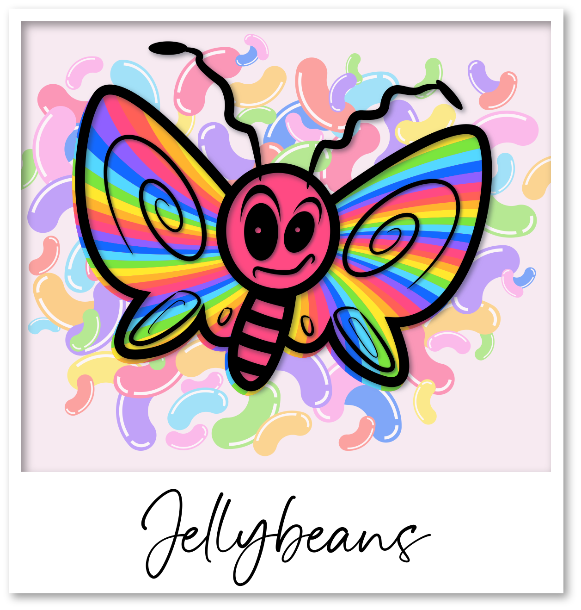
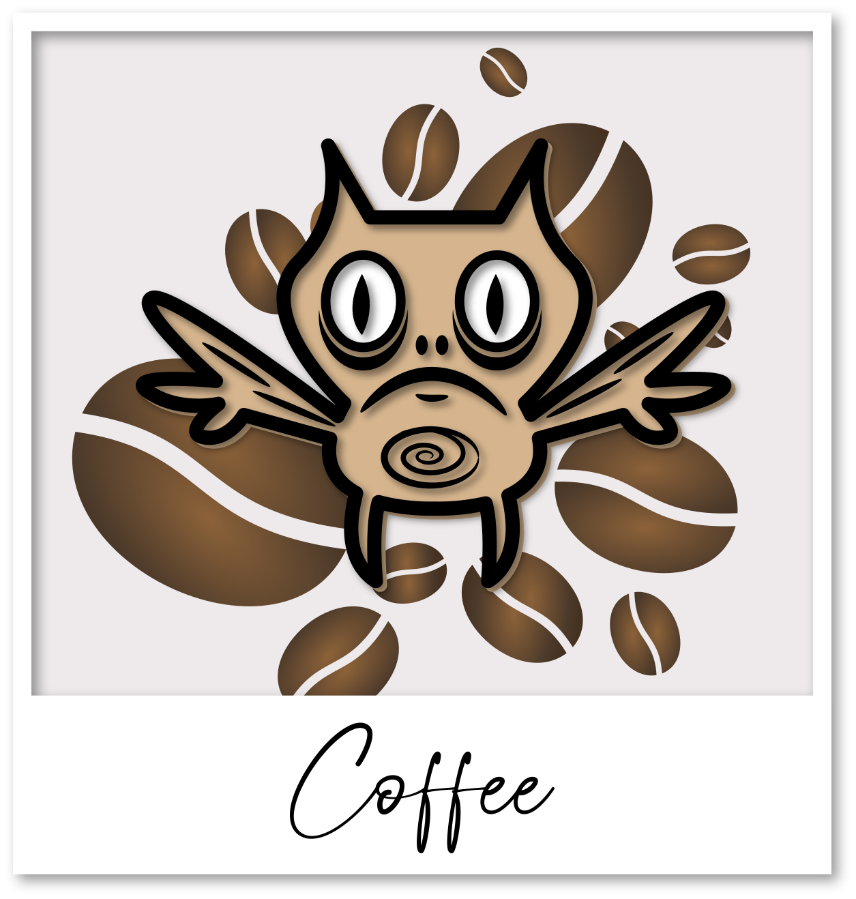
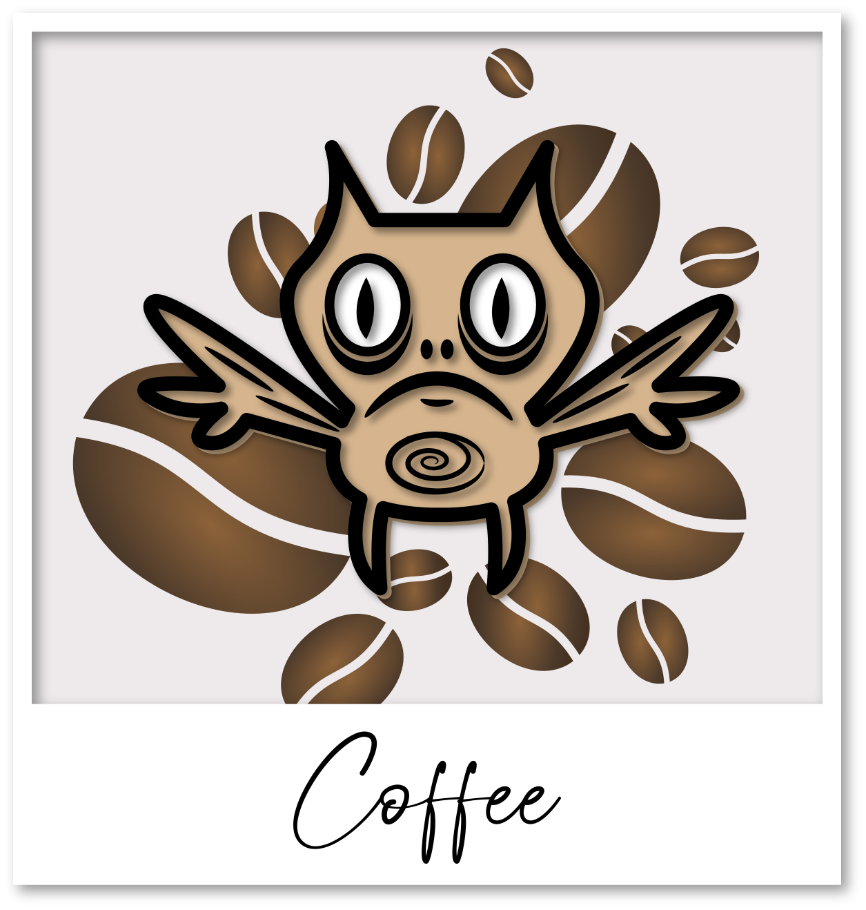
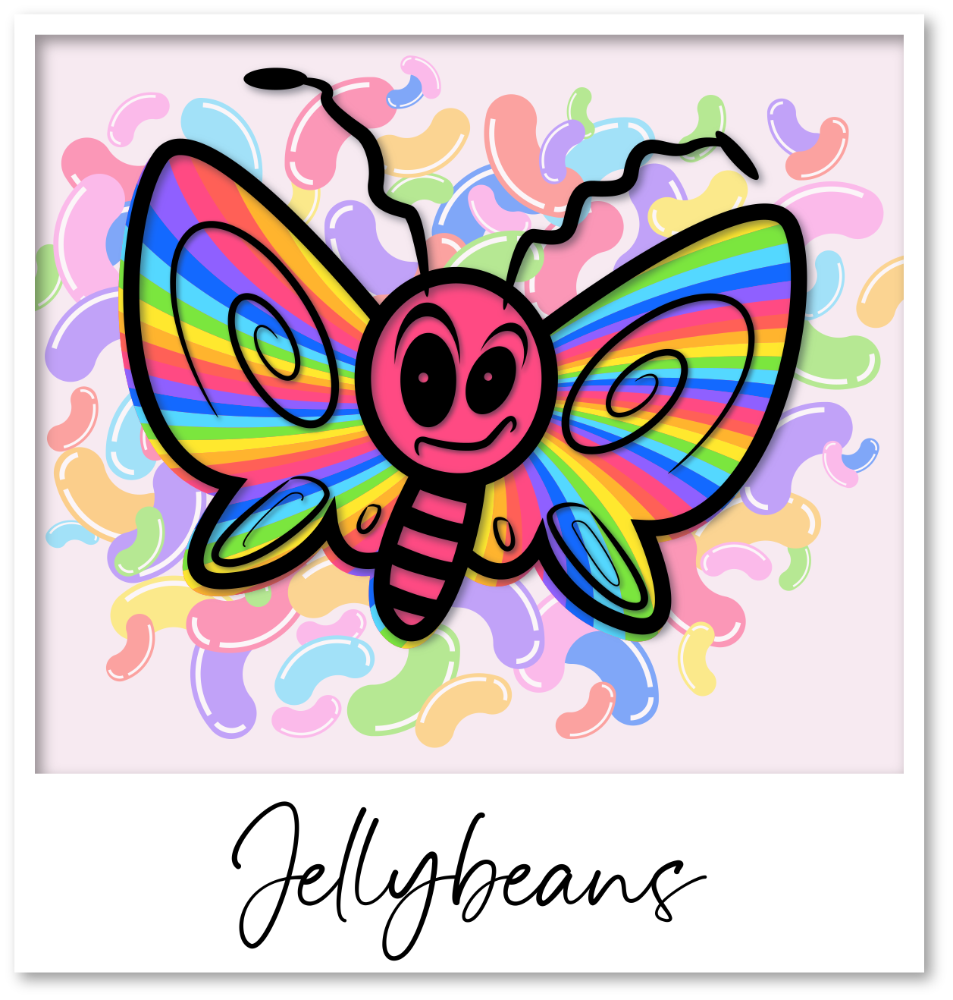
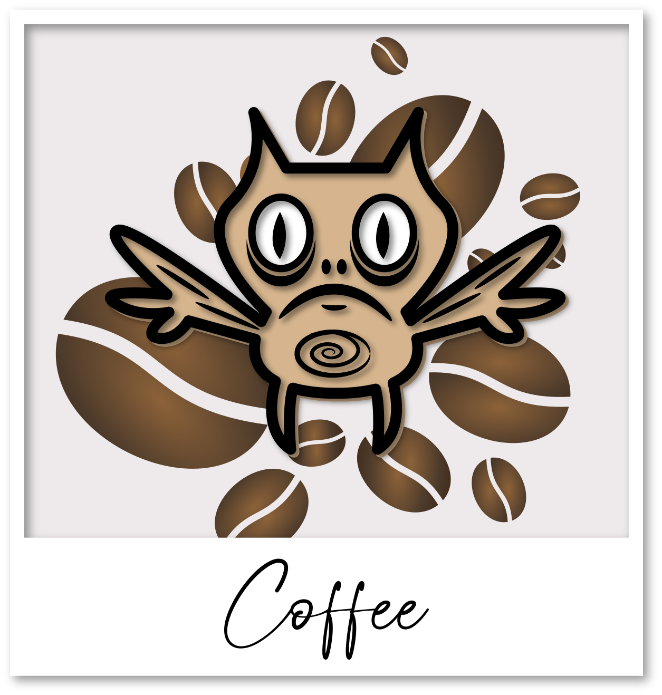

Want to create your own home-brewed game? Perphas you tried the ready-to-go game and had an idea or two about the best way to encourage discussion about disability? We would love you to improve on our version! Below are our decks of cards, a deck building tool, a form to create your own cards, the avatars we have developed, some roles we have created and a checklist help guide your decisions.
Checklist
- What are your overall goals for this game? To increase awareness of disability? To create an icebreaker game? To engage with people's ability to empathize with others?
- Who is here devising this new game? What experiences are you bring to the game?
- What are your more specifics goals? To create a competitive game? A cooperative game? A narrative game?
- Which decks of cards would help you build your game? Or do you need to create your own deck?
- Do you want to play in teams or as individuals?
- How do you keep the most people active and engaged in the game?
- What's luck got to do with it :-) Do you want to use deck shuffling in the game?
- Do you need to award points, keep track of a score or declare a winner(s) of the game?
- Is time a consideration in the gameplay you devise?
- How would you like to end the game? Time constraint? Point count? Consensus ending?
- How do you design the gameplay so it is respectful and productive?
The Cards
Dobble Debate has developed 4 decks of cards that you could use to make your own game.
Ability cards...
describe a range of capabilities, some that are traditionally called disabilities, such as autism, and others that are not usually thought of as a disability, for example synesthesia. Download the deck here.Situation cards...
illustrate environments. They range from the everyday, like public toilets to the fantastical, such a s a giant's castle. Download the deck here.Spark cards...
are stories from people living with disability. The stories are humourous, everyday narratives and innovation from peoples' daily lives. Download the deck here.Dobble cards...
are points. They range from +3 to -1.Deck Building
placeholder for Jonah's deck building tool
Create a card
placeholder for form to create your own card
The Avatars
We developed the following avatars with members of the disability community. They are sensations that everybody can imagine.



 

 




